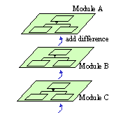
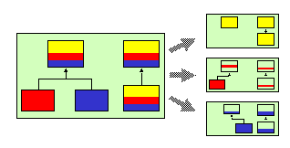

Last updated:
Dec 19 16:54:01 2001
MJ は Java 言語に改良を加えたプログラミング言語で、 実行モデルは Java とまったく同じオブジェクト指向です。 MJ からは Java のすべてのライブラリが利用でき、 アプリケーションはすべての JavaVM の上で動作します。
MJ は、 Java 言語のモジュール機構とは全く異なる 「差分ベースモジュール機構」を提供します。 これは、「オリジナルのプログラムと拡張されたプログラムの間の差分」を モジュールとして扱う機構です。 既存のシステムに対するモジュールの追加は、 ソースコードに patch に当てることに相当します。 ただし、「差分」の記述は patch のように行単位（文字列レベル）ではなく メソッド単位（言語レベル）であり、 言語処理系が型検査を行うので、安全に差分の追加が行えます。

従来のオブジェクト指向言語でも、クラス継承を使って クラス単位の差分プログラミングはできました。 しかしそのためには、 super class とは別の名前を持った subclass を、 新たに定義する必要がありました。 MJ では、 super class が持つメソッドそのものを、 新たなクラスを定義することなしに、 拡張することができます。
MJ では、クラス階層中のすべてのメソッドが、 差分を追加するための "hook" として働きます。 このおかげで、 「非常に拡張性の高いアプリケーション」が、 従来の Java 言語よりも簡潔に記述できます。
MJ では、従来の C++, Java とは違い、 クラスはモジュールとしての機能を持っていません。 クラスはオブジェクトの雛型、 モジュールはソースコードの部品（再利用・情報隠蔽の単位）であり、 ２つの機構は MJ では完全に分離されています。
MJ はオブジェクト指向言語であり、 オブジェクトが実行時の部品であることには 変わりありません。 MJ は実行時の部品であるオブジェクトと、 コンパイル時の部品であるモジュールとを独立させた言語であると言えます。
従来のオブジェクト指向言語のような「クラス＝モジュール」という 制約がなくなるため、 自由度の高いモジュール分けが可能です。 例えば、複数のクラスを横断するコラボレーションを、 独立したモジュールとして記述することができます。 これによりプログラムの保守性・再利用性が向上すると期待できます。

エンドユーザは「使用したいモジュールの名前の集合」を リンカーに指定することにより、 複数のモジュールをつなぎ合わせて、独自のアプリケーションを 構築することが可能です。 この時、モジュール同士のつなぎ方を指示する必要は一切ありません。
ほとんどのプログラミング言語では、モジュールを再利用するとき、 モジュールを組み合わせる部分のコードをプログラマーが書かなければなりません。 このとき、プログラマーはモジュールの外部仕様をちゃんと理解する必要があります。 インターフェースビルダーなどのツールを用いればコードを書く必要はないとしても、 「部品をつなぐ作業」は必要になってしまいます。 しかし MJ ではその作業は必要ありません。
n 個のモジュールが提供されていれば、最大 2^n の組合せの中から、 自分の目的に最適なコンフィギュレーションをエンドユーザが選ぶことが できることになります。 これは、ちょうどパソコンの周辺機器を、 エンドユーザが簡単に組み合わせられることに似ています。 エンドユーザは、周辺機器をつなぐ電気的信号の仕様や通信手順についての 具体的な知識がなくても、自分が使いたい周辺機器のプラグを ソケットに差し込むだけで、利用できます。 同様に MJ で書かれたアプリケーションのエンドユーザは、 部品の詳細を知らなくても、必要な機能を持ったモジュールを 組み合わせて使うことができます。
MJ ではモジュール間の依存関係は、「モジュール間の継承関係」として表現します。 sub-module は、 super-module からすべての名前を継承します。 継承関係だけによって、従来の言語のモジュール機構が持つ import/export 、 グループ化などの機能を表現します。
Java の nested class はネストした名前空間を表現可能ですが、 MJ では名前空間の多重継承により、より一般的な名前空間の構造が表現可能です。
多重継承に伴う問題の１つとして、名前の衝突があります。 Java 言語には「クラスの完全限定名」という概念がありますが、 MJ ではこれをフィールド名・メソッド名にも導入することで、 名前の衝突の問題は完全に解決しています。
各モジュールは、モジュール単位で分割コンパイルができます。 また、まったく独立に開発されたモジュールを、エンドユーザが組み合わせる （リンクする）ことができます。 リンク時にも型チェックが行われるので、リンク結果のアプリケーションの 安全性が保証されます。
MJ ではエンドユーザが使用するモジュールを指定することができますが、 これは従来の条件コンパイル( #ifdef ) の用途に似ています。#ifdef は 文字列レベルの機構ですが、 MJ はコンパイル時とリンク時の 型チェックにより、 #ifdef よりも安全にコンフィギュレーションを カスタマイズすることができます。
エンドユーザがリンク時に使いたいモジュールを指定すると、 そのモジュールが必要とするモジュールも自動的にリンクされます。 このとき、多くのシステムにあるような単純な A requires B という依存関係だけではなく、 A complements B, C という特殊な関係も処理します。
MJ は組み込みのコレクション型を 持ってます。 メソッドの引数はコンパイル時に型チェックされるため、 プログラムのエラーを早期に発見することができます。
具体的には、以下の特徴を持ちます。
これは、 foreach による２重ループの例です。
found:
foreach (Vec<String> vec in vecOfVec){
foreach (String s in vec){
if (s.equals(keyString)) break found;
}
}
実は約８０００行の MJ の言語処理系自体が、この "Collection plug-in" を 用いて書かれており、記述力の高さは実証済です。
assert マクロが使えます。
#+comment と書いて、その後の構文１つをコメントアウトすることが できます。
言語処理系は、プリプロセッサ（ソースコード変換）と ポストプロセッサ（バイトコード変換）によって実現されています。
MJ のソースコードは、まずプリプロセッサによって Java 言語の ソースコードに変換され、 Java コンパイラによって class file に コンパイルされます。 しかし、この class file は MJ の中間コードにすぎず、 そのままでは Java のプログラムとして実行はできません。 複数の class file をバイトコード変換して「リンク」することによって、 はじめて実行可能な Java のプログラムができます。
プリプロセッサの実装には 拡張可能 Java プリプロセッサEPPを 用いています。 "EPP plug-in" を追加することで、用途に応じて言語仕様を拡張することができます。
|
|
Last updated:
Dec 19 16:54:01 2001
|